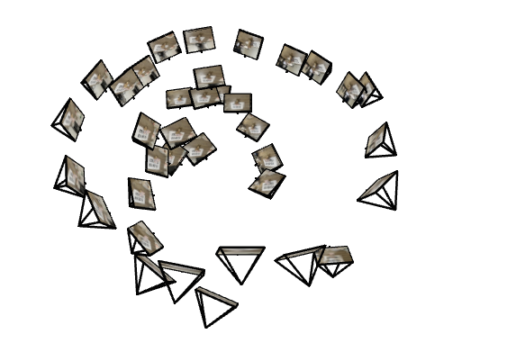
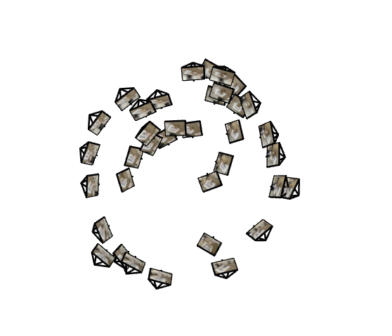
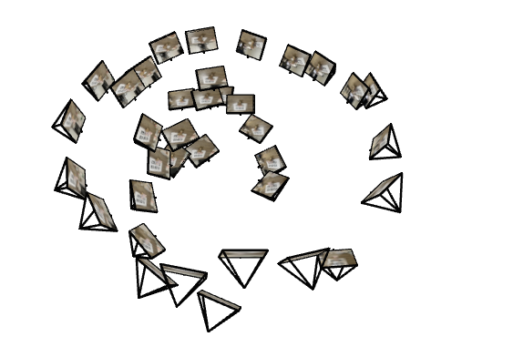
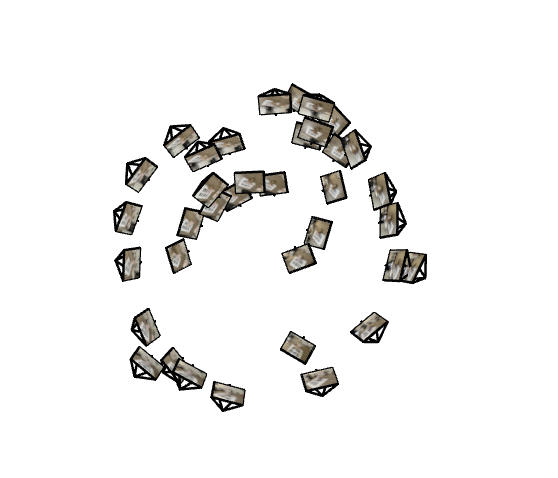
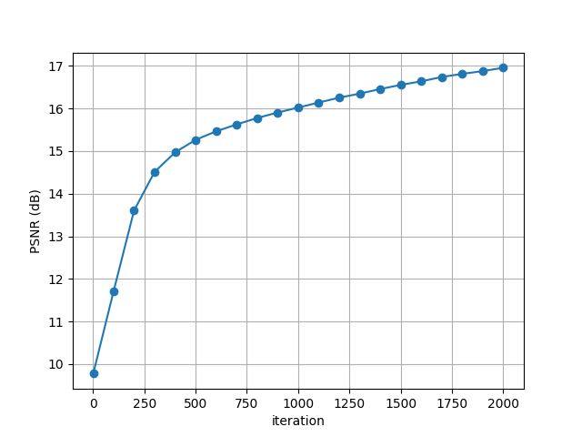
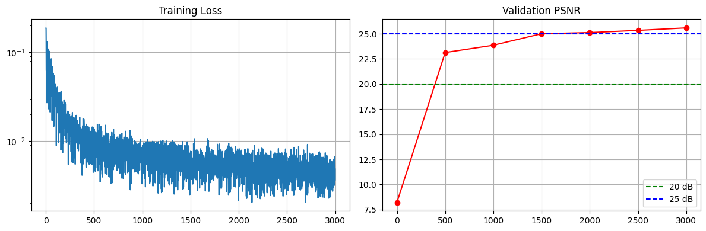
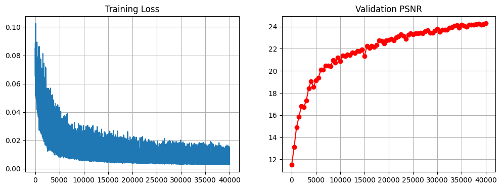

Part 0 — Camera Calibration and 3D Scanning
In this part, I calibrated the camera using ArUco markers, captured multi-view images of the
target object, estimated camera poses using solvePnP, and constructed the final
NeRF-ready dataset. The processed images, poses, and intrinsics were saved in .npz format.
Deliverables
- Example calibration images and the recovered intrinsic matrix
K - Camera pose visualization (Viser frustum screenshots)
- Undistorted vs. original image comparison
Final image shape: (62, 400, 400, 3)
Focal: 386.57093262883313
New intrinsics K:
[[389.6893997 0. 195.09427456]
[ 0. 383.45246556 261.23371531]
[ 0. 0. 1. ]]
[DONE] saved dataset → my_data_square.npz
 



Part 1 — Fit a Neural Field to a 2D Image
In this section, I trained a Multi-Layer Perceptron (MLP) with
positional encoding to learn a continuous 2D neural field representation of an image.
The network maps 2D coordinates (x, y) to RGB values (r, g, b), demonstrating
how neural fields capture high-frequency image details via Fourier feature mappings.
Model & Training Setup
- Input: 2D coordinates normalized to [−1, 1]
- Positional Encoding: Max frequency L = 10, using sin / cos features
- Network: 4-layer MLP, hidden width = 256, ReLU activation
- Loss: Mean Squared Error (MSE)
- Optimizer: Adam (learning rate = 1e−3)
- Training Steps: 2000 iterations
Training Progress
The figures below show how the model gradually learns to reconstruct the image over time. I visualize intermediate outputs at iterations for both the provided test image and a custom image.

Hyperparameter Comparison
We compare reconstructions across four settings by varying positional encoding frequency (L ∈ {2, 10}) and network width ({64, 256}). Higher L introduces more high-frequency basis functions, enabling sharper edges and finer textures. Wider networks provide greater capacity and reduce smoothing artifacts.
Overall trends:
- L=2: smoother, blurrier outputs regardless of width.
- L=10: noticeably sharper details.
- width=64: limited capacity, struggles with fine structure.
- width=256: consistently better fidelity.
PSNR Curve
PSNR steadily improves throughout training. The configuration with L = 10 and width = 256 achieves the highest PSNR of approximately 27.5 dB, indicating high-quality reconstruction.
Analysis & Summary
Observations: Increasing the positional encoding frequency allows the model to capture finer spatial variations, while larger network width increases representational capacity. Low-frequency or narrow networks produce smoother, blurrier results. The combination of L = 10 and width = 256 achieves the best balance between fidelity and efficiency.
Part 2 — Fit a Neural Radiance Field from Multi-view Images
In this section, I implemented a full Neural Radiance Field (NeRF) model trained on the synthetic Lego multi-view dataset. The goal is to learn a continuous volumetric function F(𝒙, d) → (σ, c) that maps any 3D point 𝒙 and viewing direction d to density and emitted color. Rendering is done by integrating these quantities along camera rays.
Part 2.1 — Create Rays from Cameras
I first converted pixels to camera rays by chaining three coordinate transformations:
- Camera to World (c2w): Constructed from extrinsic matrices. The camera origin is
c2w[:3, 3]. - Pixel to Camera: Used the inverse of intrinsic matrix
K⁻¹to transform pixel coordinates (u, v, s) into camera coordinates. - Pixel to Ray: Defined each ray by its origin (camera position) and normalized direction (
ray_d) obtained from the point at unit depth.
The correctness of the transformation was verified by ensuring x == transform(c2w⁻¹, transform(c2w, x))
holds for random points.
Part 2.2 — Sampling
For each training iteration, I sampled N = 512 random rays from all training images. Along each ray, nsamples = 64 points were uniformly sampled between near = 2.0 and far = 6.0. During training, I added small random perturbations to sample locations to improve coverage and reduce overfitting:
t = t + torch.rand_like(t) * (t[1] - t[0])
Each sampled 3D position was computed as x = ray_o + t * ray_d.
Part 2.3 — Dataloader Integration
I implemented a RaysData class that returns batches of
(ray_o, ray_d, pixel_color) for training. It converts randomly selected pixel coordinates
into rays using the methods above. To verify correctness, I visualized the rays, camera frustums,
and sampled points using viser:
The visualization confirms that sampled rays originate correctly from the cameras and intersect within the Lego scene volume.
Part 2.4 — Neural Radiance Field Network
The NeRF model is composed of an 8-layer MLP with skip connections at layer 4. The network takes 3D coordinates and viewing directions as input, both encoded with positional encoding (Lx=10, Ld=4). It outputs:
- σ (density): ReLU activation ensures non-negative values.
- c (color): Sigmoid activation constrains color to [0, 1].
The architecture includes a skip connection to help the network preserve spatial information across depth layers.
Part 2.5 — Volume Rendering
I implemented the discrete volume rendering equation to integrate color along each ray:
C = Σₜ T(t) · (1 − exp(−σₜ Δₜ)) · cₜ, where T(t) = exp(−Σₖ₍ₖ<t₎ σₖ Δₖ)
This was vectorized using torch.cumsum and torch.cumprod for efficiency,
and verified against the provided test case using random tensors.
Training Visualization
The model was trained for 1000 iterations using Adam (lr = 5e−4). I rendered validation views during training to visualize progression. The images below show predicted renderings at different stages of optimization:
PSNR Curve: The validation PSNR steadily improves, reaching ≈26 dB after 3000 steps.
Spherical Rendering Video
Using the provided c2ws_test camera poses, I rendered novel views of the Lego
scene along a circular trajectory. The final video demonstrates smooth 3D reconstruction
and consistent lighting across viewpoints.
Part 2.6 — Training NeRF on My Own Captured Data
For this section, I captured my own real-world object using a handheld camera and generated training data through COLMAP reconstruction. After converting the poses into NeRF-compatible format, I trained a full NeRF model using the same volume-rendering pipeline from Part 2, but with modified hyperparameters to better fit real-world data.
Training Setup
The model used a deeper TinyNeRF architecture:
- Network: TinyNeRF with width 256, positional encoding Lxyz=10, Ldir=4
- Ray batch size: 1024 rays per iteration
- Sampling: 64 points per ray, near=0.02, far=0.5
- Training iterations: 20,000
- Optimizer: Adam with learning rate decay (γ=0.995)
Training Loss & Validation PSNR
I recorded the full training loss curve and periodic PSNR evaluation on held-out poses.It takes about 6 hours and reached 26DB PSNR, but it is still a bit rough.
Intermediate Rendered Views
Throughout training, I periodically rendered the validation image to visualize convergence. Below are selected snapshots at different training iterations:
Ordered Training-View Renderings (GIF)
Using the provided c2ws_test camera poses, I rendered novel views of my
scene along a circular trajectory. The final video demonstrates smooth 3D reconstruction
and consistent lighting across viewpoints.